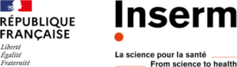
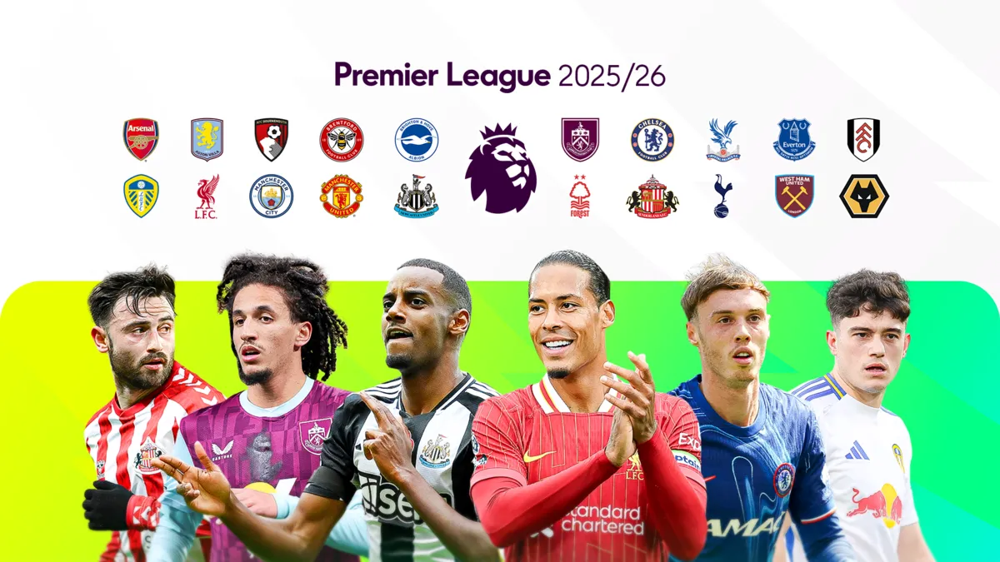

Élève ingénieur · Data Science & IAEngineering student · Data Science & AI
Victor Zhou
Étudiant en dernière année d'école d'ingénieurs à Polytech Sorbonne (Mathématiques Appliquées & Informatique), actuellement en échange à Kyoto University. Je conçois des systèmes d'IA générative (RAG, LLM), des applications full-stack et des pipelines DevOps.Final-year engineering student at Polytech Sorbonne (Applied Mathematics & Computer Science), currently on exchange at Kyoto University. I build generative AI systems (RAG, LLMs), full-stack applications and DevOps pipelines.
Recherche un stage de 6 mois en Data Science / IA à partir de mars 2027Looking for a 6-month Data Science / AI internship starting March 2027
Paris, France · actuellement à Kyoto, JaponParis, France · currently in Kyoto, Japan
01
À proposAbout me
Passionné par l'IA et ses applications concrètes, j'aime associer les mathématiques et l'informatique pour résoudre des problèmes complexes. Ma formation à Polytech Sorbonne (statistiques, optimisation, probabilités, analyse de données, calcul haute performance) me donne des bases solides que j'applique en entreprise comme en laboratoire.
Passionate about AI and its real-world applications, I enjoy combining mathematics and computer science to solve complex problems. My training at Polytech Sorbonne (statistics, optimization, probability, data analysis, high-performance computing) gives me solid foundations that I apply both in industry and in research.
Chez BPCE-IT, à l'INSERM et au LIP6 (CNRS), j'ai travaillé sur toute la chaîne : de l'IA générative (RAG, LLM, recherche sémantique) au développement full-stack, jusqu'au déploiement avec CI/CD sur OpenShift. Je souhaite aujourd'hui approfondir la Data Science et le Machine Learning dans un environnement stimulant.
At BPCE-IT, INSERM and LIP6 (CNRS), I worked across the whole chain: from generative AI (RAG, LLMs, semantic search) to full-stack development, all the way to CI/CD deployment on OpenShift. I now want to deepen my expertise in Data Science and Machine Learning in a stimulating environment.
Conception et déploiement d'un chatbot basé sur une architecture RAG multi-service (base vectorielle ChromaDB), dédié à l'analyse de la documentation interne de l'entreprise (MVP).Designed and deployed a chatbot built on a multi-service RAG architecture (ChromaDB vector database) to analyze the company's internal documentation (MVP).
Développement full-stack d'une plateforme interne de coaching (réservation de créneaux), du recueil des besoins à la conception, l'implémentation, les tests, la documentation et le déploiement, en couvrant les rôles de Product Owner, dev full-stack, UX/UI et DevOps.Full-stack development of an internal coaching platform (slot booking), from requirements gathering and functional design to implementation, testing, documentation and deployment, covering the roles of Product Owner, full-stack developer, UX/UI and DevOps.
Construction d'un pipeline CI/CD complet from scratch (Jenkins, XL Deploy / XL Release), adaptation des pipelines existants et migration d'applications entre clusters OpenShift (Kubernetes).Built a complete CI/CD pipeline from scratch (Jenkins, XL Deploy / XL Release), adapted existing deployment pipelines and carried out application migrations between OpenShift clusters (Kubernetes).
Python
FastAPI
React
TypeScript
MongoDB
RAG
ChromaDB
Docker
OpenShift
Jenkins
XLD/XLR
Artifactory
Jira
Agile

Projet industriel — Software Engineer & AIIndustrial project — Software Engineer & AI
Sept. 2025 – Mai 2026Sept 2025 – May 2026
INSERM × Polytech Sorbonne · Paris
Conception d'un système de bout en bout propulsé par des LLM qui automatise la vérification des références scientifiques dans les rapports d'expertise de l'INSERM. Ce processus était jusqu'ici entièrement manuel, sur des centaines de citations par document.Built an end-to-end LLM-powered system that automates scientific reference verification in INSERM's large expert reports, replacing a fully manual process across hundreds of citations per document.
Pipeline hybride d'appariement citation → PDF (heuristiques auteur/année et similarité floue des titres) gérant les cas limites comme les références homonymes (même auteur, même année).Hybrid citation-to-PDF matching pipeline (author/year heuristics and fuzzy title similarity) handling edge cases such as homonymous references (same author, same year).
Recherche sémantique en deux étapes : retrieval dense avec Sentence Transformers (bi-encodeur MiniLM multilingue), puis reranking fin par cross-encodeur (BAAI/BGE-reranker-v2-m3).Two-stage semantic retrieval: dense retrieval with Sentence Transformers (multilingual MiniLM bi-encoder), followed by fine-grained reranking with a cross-encoder (BAAI/BGE-reranker-v2-m3).
Intégration de Mistral (API, et en local via Ollama pour la confidentialité des données) pour évaluer la cohérence sémantique entre citations et extraits sources, avec des sorties JSON structurées et des justifications explicables.Integrated Mistral (API, and locally via Ollama for data confidentiality) to assess semantic consistency between citation contexts and source chunks, producing structured JSON outputs with explainable justifications.
Livraison d'une application desktop packagée (PySide6/Qt) : streaming des résultats en temps réel, aperçu PDF et interface de commande en langage naturel, avec 95–98 % de précision en validation sur des rapports INSERM publiés.Delivered a fully packaged desktop application (PySide6/Qt) with real-time result streaming, PDF preview and a natural-language command interface, achieving 95–98% validation accuracy on published INSERM reports.
Python
LLM
RAG
NLP
Sentence Transformers
Cross-encoder
Mistral
Ollama
PySide6
Stage Assistant de rechercheResearch Assistant Intern
Mai 2025 – Août 2025May 2025 – Aug 2025
LIP6 — CNRS — Sorbonne Université · Paris
Implémentation en Go d'un algorithme distribué favorisant l'émergence de hubs dans des réseaux pair-à-pair (P2P).Implemented in Go a distributed algorithm fostering the emergence of hubs in peer-to-peer (P2P) networks.
Automatisation (scripts Shell) de benchmarks simulés et réels évaluant la stabilité et la convergence du réseau sous différentes contraintes, notamment la perte de hubs.Automated (Shell scripts) simulated and real-world benchmarks assessing network stability and convergence under various constraints, including hub loss.
Analyse approfondie des métriques système (%CPU, CPU Time, RAM) et présentation des résultats lors de réunions de suivi avec chercheurs et doctorants.In-depth analysis of system metrics (%CPU, CPU time, RAM) and presentation of results in progress meetings with researchers and PhD students.
Go
Shell
Python
Linux
GitLab
P2P
Systèmes distribuésDistributed systems
03
ProjetsProjects

Août 2025Aug 2025
Analyse et prédiction du classement de Premier LeaguePremier League standings analysis & prediction
Analyse de données et prédiction du classement final de Premier League pour la saison 2025/26.Data analysis and prediction of the final Premier League standings for the 2025/26 season.
Data Science
PrédictionForecasting
Mai 2025May 2025
Analyse de données & Machine LearningData analysis & Machine Learning
Traitement et analyse exploratoire (EDA) avec pandas d'un jeu de données Spotify (Kaggle, 1921–2020), puis entraînement et évaluation d'un modèle de Machine Learning prédisant la popularité d'une chanson avec scikit-learn.Data processing and exploratory data analysis (EDA) with pandas on a Spotify dataset (Kaggle, 1921–2020), then training and evaluation of a Machine Learning model predicting song popularity with scikit-learn.
Étude de l'évolution du paludismeModelling the spread of malaria
Modélisation par un système différentiel non linéaire, résolution numérique en Python (Euler, Runge-Kutta 4) et analyse d'impact sur des données réelles de l'OMS pour formuler des recommandations de santé publique (stratégie de vaccination).Modelling with a nonlinear differential system, numerical solving in Python (Euler, Runge-Kutta 4) and impact analysis on real WHO data to formulate public health recommendations (vaccination strategy).
Tetris en réseau TCP/UDP, en CNetworked Tetris over TCP/UDP, in C
Implémentation du jeu Tetris en réseau avec une architecture client/serveur utilisant les protocoles TCP et UDP.Networked implementation of Tetris with a client/server architecture using the TCP and UDP protocols.
Engagement associatif & sport : membre du Bureau des Sports (Polytech Sorbonne, 2024–2025), organisation d'événements et travail d'équipe ; football en club (12 ans) : esprit d'équipe, discipline et rigueur.Student involvement & sport: member of the Sports Office (Polytech Sorbonne, 2024–2025), event organization and teamwork; club football (12 years): team spirit, discipline and rigor.
Passions : veille technologique (IA, Data, Économie), jeu d'échecs, sports, voyages et découverte de nouvelles cultures.Passions: tech watch (AI, Data, Economics), chess, sports, travelling and discovering new cultures.
06
Travaillons ensembleLet's work together
Je recherche un stage de 6 mois en Data Science / IA à partir de mars 2027. N'hésitez pas à me contacter !I'm looking for a 6-month Data Science / AI internship starting March 2027. Feel free to reach out!